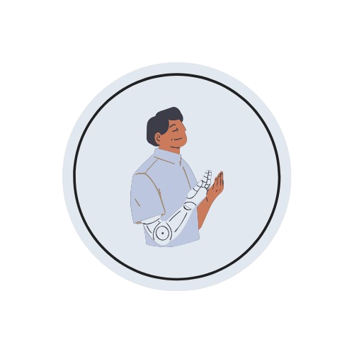
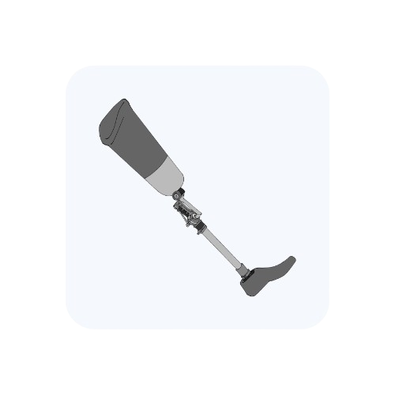
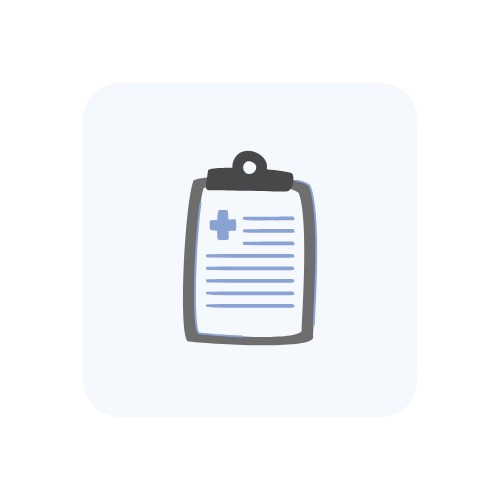
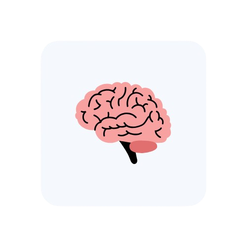
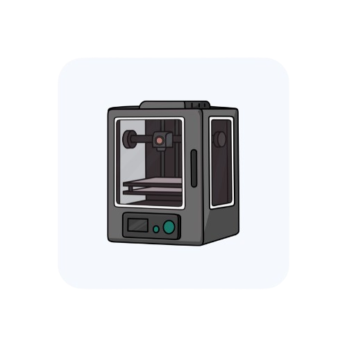

Seu movimento merece cuidado.
Cuidando da sua saúde através da fisioterapia personalizada.
Sobre nós
Nossa História
Nossa história nasceu no sul do Brasil, a partir do sonho de duas irmãs que acreditavam que diferentes áreas de conhecimento poderiam se unir para transformar vidas. A irmã mais velha encontrou na fisioterapia sua vocação, dedicando-se ao cuidado das pessoas, à recuperação dos movimentos e ao processo de reabilitação. Já a irmã mais nova seguiu pelo caminho da tecnologia, buscando soluções inovadoras para criar novas possibilidades. Com trajetórias diferentes, mas com o mesmo propósito de ajudar pessoas, elas uniram seus conhecimentos para criar uma clínica onde a fisioterapia e a tecnologia caminham juntas. Hoje, trabalhamos com soluções modernas em reabilitação e próteses tecnológicas, oferecendo um atendimento personalizado e humano para cada paciente.
Nosso Propósito
Acreditamos que a tecnologia deve estar a serviço das pessoas. Nosso propósito é transformar vidas através da união entre fisioterapia, inovação e cuidado humano, desenvolvendo soluções que ajudem cada paciente a recuperar sua autonomia, confiança e qualidade de vida. Mais do que criar tratamentos e próteses, buscamos devolver possibilidades: o movimento de caminhar, realizar atividades do dia a dia e viver novas experiências com mais liberdade. Cada pessoa possui uma história única, e nosso compromisso é fazer parte dessa jornada de recuperação e evolução.
Especialidades
Reabilitação com Próteses Tecnológicas

Auxiliamos pacientes na adaptação e no uso de próteses modernas, promovendo mais autonomia, conforto e qualidade de vida.
Fisioterapia Pediátrica

Acompanhamento especializado para crianças, auxiliando no desenvolvimento motor e na reabilitação de diferentes condições.
Reabilitação Pós-operatória

Criamos planos de tratamento personalizados para acelerar a recuperação, restaurar os movimentos e garantir um retorno seguro às atividades.
Fisioterapia Esportiva

Prevenimos e tratamos lesões relacionadas ao esporte, ajudando atletas e praticantes de atividades físicas a recuperar seu melhor desempenho
Fisioterapia Neurológica

Promovemos a reabilitação de pacientes com condições neurológicas, estimulando a mobilidade, o equilíbrio e a independência por meio de tratamentos especializados.
Próteses Personalizadas em 3D

Desenvolvemos próteses sob medida com tecnologia de impressão 3D, unindo precisão, inovação e conforto para cada paciente.